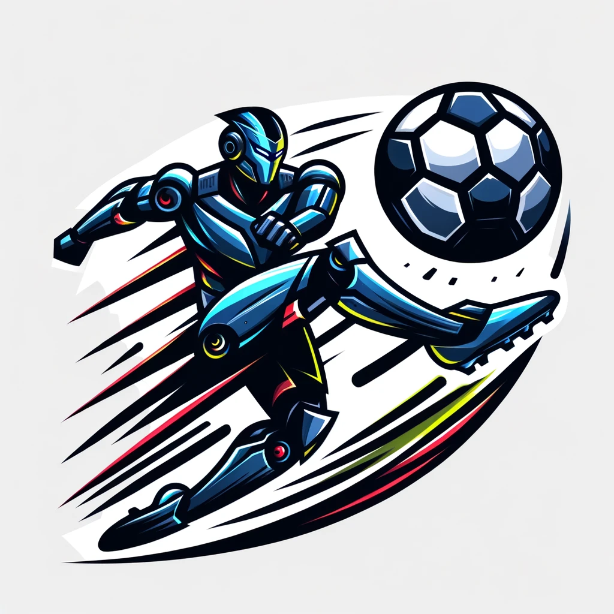
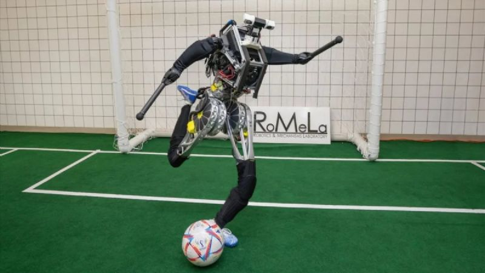

Robots que juegan al fútbol
Historia y desarrollo del fútbol jugado por robots
La idea de robots jugando al fútbol fue mencionada por primera vez por el profesor Alan Mackworth en un articulo titulado "on seeing robots".
En 1992 un grupo de investigadores japoneses organizó un taller sobre los grandes retos en inteligencia artificial , enfocándose en el fútbol para promover la ciencia la ciencia y la tecnología. Desarrollaron reglas y prototipos de robots de fútbol y sistemas simuladores. El proyecto se llamo Robocup.
Los primeros juegos oficiales de Robocup se celebraron en 1997 con más de 40 equipos y más de 5000 expectadores.
Robocup es una competición de fútbol que cuenta actualmente con 8 ligas según el tamaño y la forma del robot , incluyendo tamaños , pequeño , medio, humanoide (kid size / teen size/ adult size) plataforma estándar y simulación (3D/2D).
Estas ligas tienen reglas especificas para cada Juego, demostrando estrategias basadas en el mapeo de los robots.
Tecnologías involucradas
- Actuadores y mecanismos de movimiento que les permiten a los robots moverse y dar patadas a la pelota.
- Sistemas de equilibrio y estabilidad que permiten a los robots no caerse cuando reciben empujones.
- Capacidades de visión y precepción de entorno que permiten a los robots ver y reaccionar a su entorno, detectan la pelota, reconocen los límites del campo y la ubicación de otros jugadores . Para esto se utilizan cámaras y sensores.
- Comunicación y estrategia de juego autónoma para que los robots puedan coordinarse entre sí y ejecutar estrategias de juego.
- Software y algoritmos de inteligencia artificial que les permite aprender, adaptarse y tomar decisiones.
- Simulación y entrenamiento en entornos virtuales. Esto les permite aprender y perfeccionar sus habilidades en un entorno controlado antes de enfrentarse a las complejidades y variables impredecibles del mundo.
Ejemplo de uso de la tecnología
El robot tiene sensores que detectan la pelota, cuando la pelota se acerca al robot, este cambia de color azul a marrón.
Competiciones y Eventos
Como ya he mencionado antes, la Robocup es la mayor competición mundial de fútbol jugado por robots. Reúne a ingenieros de todo el mundo y nació con el objetivo de crear un equipo de robots capaces de competir en el mundial de futbol de 2050 contra humanos.
Hoy en día los robots ya han evolucionado mucho jugando al fútbol, por ejemplo el modelo ARTEMIS tiene movimientos casi humanos.
Opinión personal
En mi opinión, el fútbol con robots es algo que podría llegar a triunfar, ya que está evolucionando bastante rápido. Y aunque he visto algún partido en el que los robots no se veían muy sueltos, había algunos que hacían jugadas de telegrafía, y hasta que quieran participar en el mundial de 2050 que quedan 27 años, pueden evolucionar bastante más.